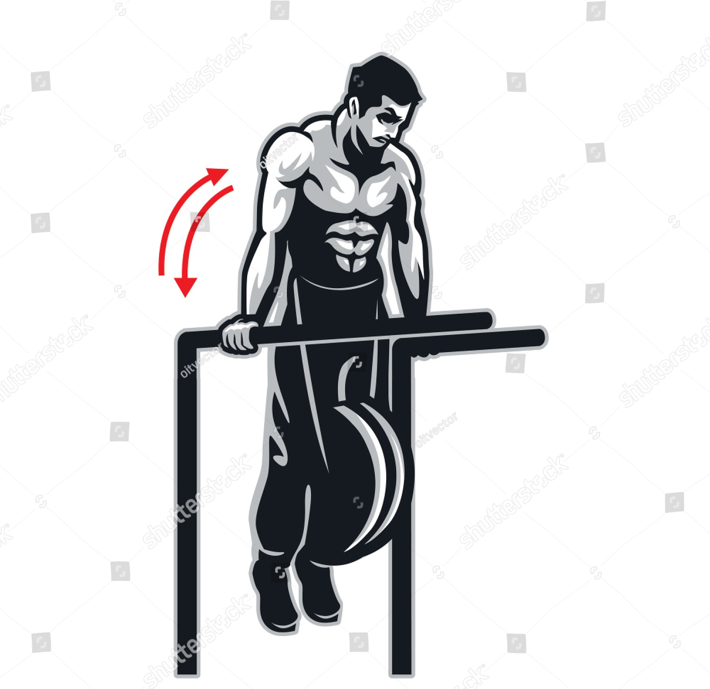

Exercise Description
Use parallel bars or a dip station. Attach a weight belt or hold a dumbbell between your legs. Lower your body by bending your elbows until your chest is parallel to the floor, then push back up to the starting position.
Reps and Sets
Beginners: 3 sets of 15-20 reps
Weights: metal chain(5-10kg) or 10kg plate.
Rest time between each set: 45secs
Video Implementation